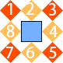

border-width 线条宽度
border-style 线条样式
border-color 线条颜色
复合属性border: border-width border-style border-color
利用大边框和零尺寸生成三角形
.tran {
width: 0;
margin: 0 auto;
border: 1rem solid transparent;
border-bottom-color: #f40;
}
利用不同的宽度生成阶梯
.ladder>div {
border-style: solid;
border-color: transparent;
margin: -.6rem auto;
}
.ladder>div:nth-child(1) {
width: 60%;
border-width: .6rem;
border-bottom-color: rgba(0, 0, 0, .2);
}
//...
.ladder>div:nth-child(5) {
width: 100%;
border-width: 1rem;
border-bottom-color: rgba(0, 0, 0, .2);
}
1.圆角边框；50%为正圆
2.可单独设置每个角的变化
3.也可以在x和y方向上设置角的半径变化；/前面是4个角水平方向的半径；/后面是4个角垂直方向的班级
border-radius:x x x x/y y y y
//case1
border-radius: 50%;
//case2
border-top-left-radius: 50%;
//case3
border-top-left-radius: 50%;
border-bottom-left-radius: 50%;
border-bottom-right-radius: 50%;
//case4
border-top-left-radius: 50%;
border-top-right-radius: 50%;
border-image-source：背景图片；可以是线性渐变或径向渐变
border-image-slice：图像边界向内的偏移，默认100%；4个方向：top right bottom left；不带单位；当border-image-slice小于图像的一半50%时，border-image-repeat的特性才会体现出来
border-image-width：图像宽度，默认是100%；可以使用px
border-image-outset：图像向外扩展的区域，默认0；不可以是负数

.border-img {
border: 27px solid;
border-image-source: url(../imgs/border-img.png);
border-image-slice: 27;
border-image-repeat: round;
}
1.体验上述内容
2.绘制一个鸡蛋